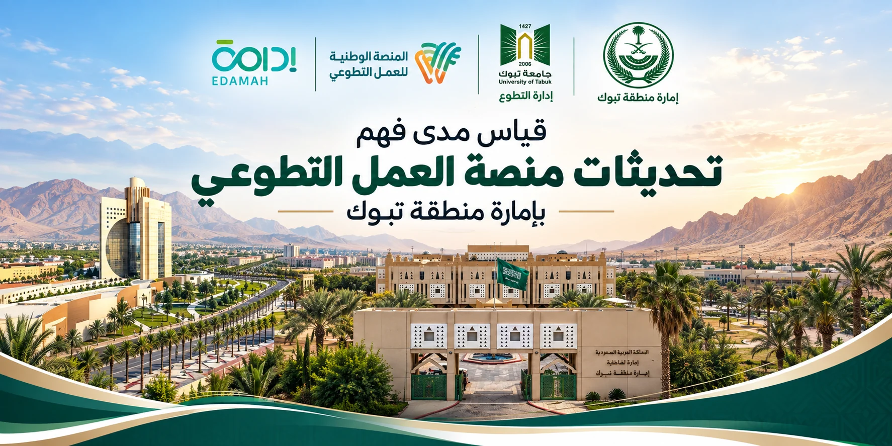

استبانة قياس المعرفة والاحتياجات
اضغط للبدء والإجابة عن الأسئلة داخل الموقع.
تعذّر تحميل الاستبانة. يُرجى تحديث الصفحة والمحاولة مرة أخرى.

اضغط للبدء والإجابة عن الأسئلة داخل الموقع.
تعذّر تحميل الاستبانة. يُرجى تحديث الصفحة والمحاولة مرة أخرى.